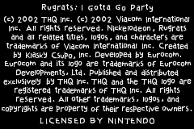

3 Games in 1 - Rugrats - I Gotta Go Party + SpongeBob SquarePants - SuperSponge + Tak and the Power of Juju (Europe) (En+En+En,Fr,De)
Stateless / Passcode
Cartridge Identity
- Game Code
B44P(FamilyB44)- Header Title
TAK_RUG_SSPO- Maker / Revision
78/ rev0- ROM Size
- 16.0 MiB (16,777,216 B)
- Save Media
None / Unknown- SHA-256
94138b8747e2495b7fb13ee378078b469573d6718b1f8c5ecbf4ed6484fdece9- Engine / SDK Group
comm-005(81 families)
Screenshots


Cartridge Storage Architecture: Stateless / Passcode
Zero non-volatile battery hardware: This cartridge PCB contains ROM only (no SRAM, Flash, or EEPROM chips). Progression is preserved via on-screen passcodes or session-only gameplay. No
.sav file is generated or required.
ROM Assets, Compression & Audio
- BIOS Compression
- LZ77 (
0x10): 2,353 streams · RLE (0x30): 26 streams - ROM Pointer Tables
- 69 tables (1 pointing to validated compressed streams)
- SDK Backup Tags
EEPROM_V122
Hardware MMIO Subsystems
dma_transfer0x87d2784,0x87d2ea0,0x87d2ea8ppu_display0x8010388,0x87d1248,0x87d1284,0x87d21b8